Predicting Airplane Turn Time Using Flight Records
Introduction
Everyday there are thousands of flights in the United States, and there is a lot that goes on behind the scenes by time it is time for passengers to onboard the plane. Once the plane lands at its destination, bags and passengers are unloaded, aircraft is cleaned, moved to the next gate and the new passengers and bags are loaded. This process is known as turn time – the time required to unload an airplane after it arrives at the gate and to prepare it for departure again. Since the plane is not making money while it’s on the ground, airline operations must constantly find ways to reduce the airplane turn time and make the process as efficient as possible. And in a perfect world, airplanes would arrive on time, the turn time would be constant, and passengers would board their next flight without any delays. But in reality, many unpredictable factors can contribute to a flight being delayed, such as unfavorable weather conditions, maintenance repairs, missing crew members, just to name a few. Whenever there is a delay in an upcoming flight, it is important to let the passengers know ahead of time so that they can best prepare for the situation. Using historical flight records from American Airlines, a model is built to predict the turn time, which can be used to determine if the flight will be delayed or if it will depart on time.
Exploring the Data
The dataset comes from American Airlines, they have recorded two million flight records with 40 different variables that deal with the type of plane, its destination, the number of passengers, and various numeric variables that for schedule times and recording how long something took. Basically, many of the details are recorded during the process of turning the plane, from the plane landing to leaving to its next destination. Here are some of the variables that are the most relevant for our prediction.
Data Dictionary
- Operating airline: Designating if it is a regional airline or mainline airline
- Fleet type: The fleet type of aircraft (e.g., Boeing 777 or Airbus A320)
- Sub-fleet type: The sub-fleet of the aircraft (e.g., Boeing 777-200 or Boeing 777-300)
- Aircraft tail code: Unique identifier for each aircraft
- Inbound flight number: Flight number of the arriving flight
- Inbound origin: Where the arriving flight is coming from
- Inbound arrival date and time: When did the arrival flight arrive
- Seats: Number of seats on the aircraft
- Inbound Passengers: Number of passengers on the arriving flight
- Outbound Passengers: Number of passengers on the departing flight
- MOGT: The minimum time required for the turn assigned by the airline
- Available Ground Time: How long the aircraft has to complete the turn, calculated as the difference of the schedule departure time and the actual arrival time of the inbound flight
- Tight Turn: If the available ground time is less than or equal to MOGT the turn is considered “tight”
- Flight number: Flight number for the departing flight
- Departure date: Date of the departing flight
- Station type: Identifies the departing airport as a hub/gateway, international or spoke
- Required boarding minutes: How much time is required to board all passengers
- Origin airport: Origin of the departing flight
- Destination airport: Destination of the departing flight
- Scheduled departure date and time: When the aircraft is scheduled to leave
- Actual departure date and time: When the aircraft actually leaves
- Uncontrollable delay indicator: Did the departing flight experience a delay that the airline cannot control (e.g., weather)
- First bag off time: What time was the first bag from the arriving flight offloaded
- Last bag off time: What time was the last bag from the arriving flight offloaded
- Last bag on time: What time was the last bag of the departing flight loaded
- Minimum crew check-in: What time was the minimum required number of flight attendants present to start boarding passengers
- First revenue passenger board time: What time was the first revenue passenger boarded
- Last revenue passenger board time: What time was the last revenue passenger boarded
- Last passenger board time: What time was the last passenger boarded
- Turn Time: The actual time it took to turn the aircraft, calculated as the difference between the inbound arrival and outbound departure
One of the most important variables for AA operations is MOGT, minimum time required for the turn, assigned by the airline. There is one particular situation operations spend a lot of time investigating in a turn, and that is when the time available to turn an aircraft is less than the minimum time required to turn the aircraft. This situation is considered a “tight turn”, defined when the available ground time is less than or equal to MOGT. 40.3% of flights in this dataset are considered tight turns, these flights are of most interest to the airline since it is more likely a flight in a tight turn will be delayed. We can see how critical tight turns are to delays by counting all the delayed flights that have occurred from a tight turn situation.

Plotting MOGT on a histogram shows the distribution of the time required to turn the plane, which is on average about 51 minutes, which is a reasonable time in most cases to turn an airplane. The histogram of available ground time shows a long tail to the right of the distribution for available ground time going over 400+ minutes. This could be because after the plane lands it does not have a flight until the next day, leaving the plane on the ground overnight. The average ground time for a plane is about 120 minutes. There is also negative ground time, which can mean that the airplane arrived at the airport after its next scheduled departure time.
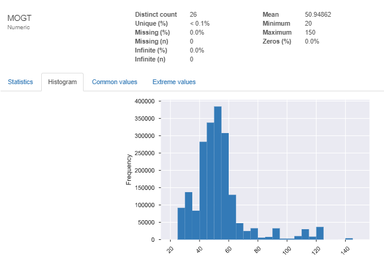 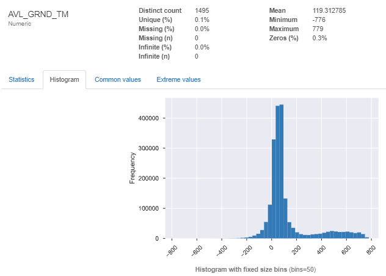There are also variables that have missing values, in particular, FA_MIN_CREW has about half of it’s values missing. Since FA_MIN_CREW won't be used in the analysis, this variable will simply be dropped from the dataset.
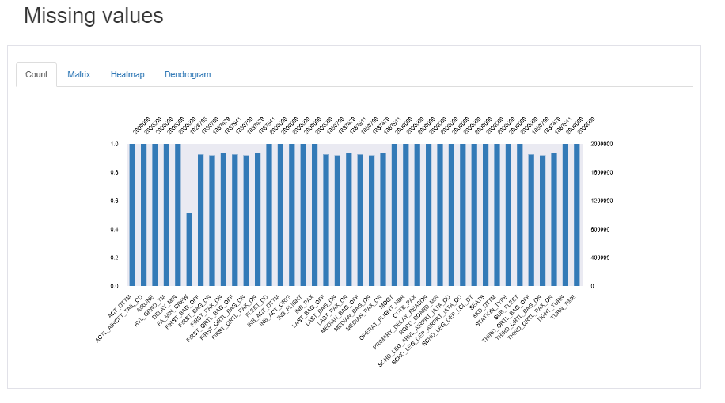Here are some of the categorical variables along with the most common values for each variable. There only three station types; hub, spoke, and international. Primary delay reason shows what was the reason for the delay if there was one.
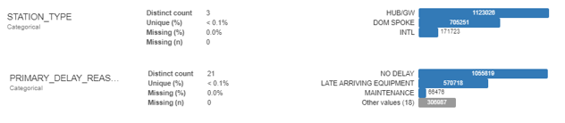The majority of the flights in this dataset belong to American Airlines with 77.7% of total flights. The other airline flights might cause inconsistencies with the model since they might have different procedures and metrics for operating their airplanes, so we will only include AA flights for our analysis.
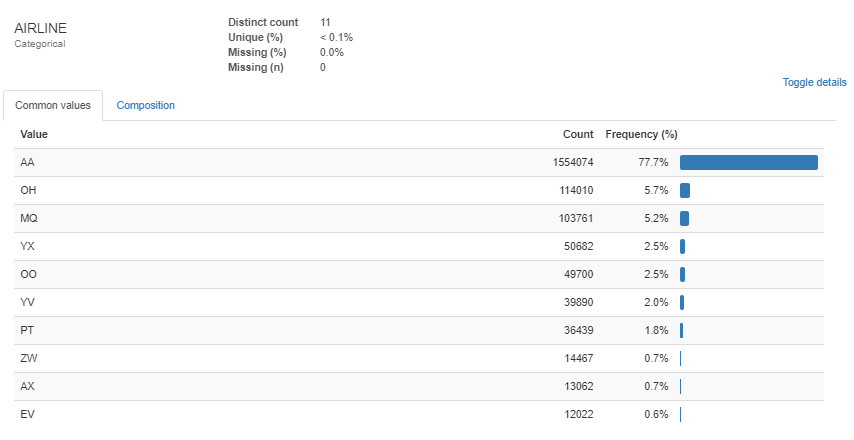To better understand how the variables relate to the turn time process, one has to get familiar with the timeline of events and when the variables are created during the process. This will help later when deciding the variables that will go into the model. Let’s consider why would it be important to create a turn time prediction for the airplane. By creating a prediction, it can help make future decisions related to operations performance. If we predict the turn time will cause a delay, then the airline company can allocate more resources into helping the plane turn faster. Also, a prediction can inform the incoming passengers of any delays ahead of time so they can prepare. Another thing to consider is where in the timeline will this prediction be most useful, typically the sooner the better, but there is a tradeoff between the time of the prediction and the accuracy of the prediction. The timeline shows the progression of the variables being created as the airplane goes through a turn, the further down the turn the more data is created. If the prediction is given at the beginning of the turn, the model would be most useful, giving a lot of time for the airline to react to the situation. The problem is that there is not much data generated at this point for the flight and the prediction will not be very accurate. If the prediction is given at the end of the turn, when the passengers are boarding the plane, the prediction would be most accurate since most of the data has been generated for the flight. But the prediction will not be very useful since there is very little one can do at that point to improve turn time performance. To balance this tradeoff, the prediction should be made somewhere in the middle of the airplane’s turn.
One point where we can make the prediction is when the airplane touches the ground. So we can use the variables of the flight that were generated up to that point to make the prediction.
Creating New Features
To improve the model’s performance, new variables are created from the subset of variables we have selected for our model. By transforming the data in different ways, we can develop more insights and help standardized the variables before inputting them into a model. By converting inbound and outbound seats into a percentage of plane capacity will normalize the occupancy rate across all airplanes. Another important variable to create is available ground time of MOGT as a percent. This variable will tell us what percentage of available ground time is available from the MOGT. All the datetime variables will be converted into minutes as well.
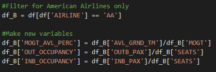Increasing the MOGT by 10% will allow us to analyze more tight turn situations that are in the spectrum of being very close to a tight turn. Another variable is created that labels the flight as a successful tight turn or not, meaning that in a tight turn situation, was the airplane able to leave on time. Any rows containing null values will remove them from the dataset
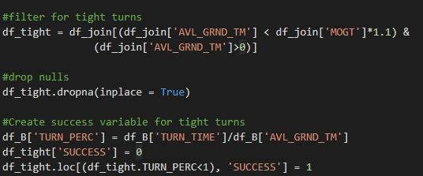Another feature added is one that defines the work shift of the airplane. After converting the INB_ACT_DTTM DateTime variable into minutes, we can assign different shifts depending on the time of day. For this dataset, three shifts are created: morning, afternoon, and night. Along with assigning a value to each respective timeframe, the average delay time for each shift calculated, filtered by the airports that fly American Airlines. As shown in the picture below, as the day progresses the average delay becomes longer, which makes sense because at the beginning of the day there will be fewer complications and fewer flights but then as the day progresses there is more volume in traffic at the airport.
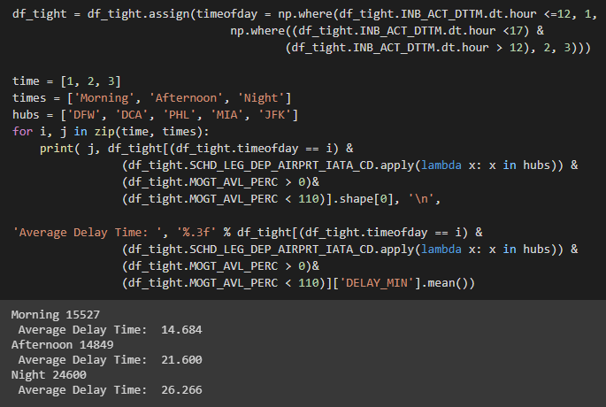Next is encoding the maintenance reasons into a binary variable, using only three of the values: late arriving equipment, ATC, and maintenance. An international flight variable is created to denote if a flight is international or not. Previous tight turn status will be put into a binary variable that will denote if a flight was previously in a tight turn situation, this will denote if the airplane is behind on schedule. The final two variables: ON_PERC and OFF_PERC, are the onboarding and offboarding as a percentage of available ground time.
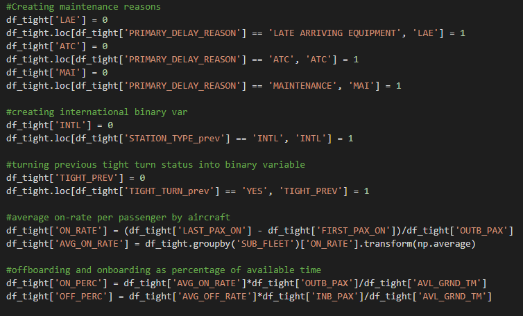The Prediction Model
Now that the variables have been created, it is time to prepare the model. The model used is a XGBoost Regressor, which is currently the best tree-based regression algorithm. The variables for the model are shown below, and the data is split for training and testing with 33% of the data being set aside for testing.
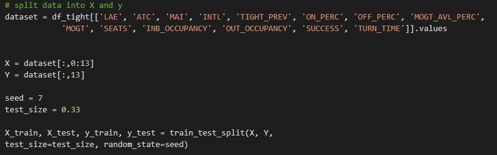Hyperparameter tuning was done to optimize the parameters before training the model. This will help the performance of the model by finding the best values for the parameters before training the model.
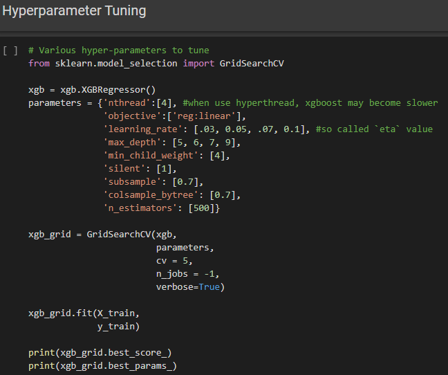Here are the results of the grid search, which will be used to train the model.
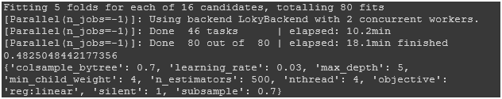Here are the results after training the model. The performance metric that was used for this model was root mean square error, which calculates the loss of the model’s ability to make a prediction. The root mean square error is 17.84 minutes, which means the prediction of the tight turn can vary on average 17.84 minutes.
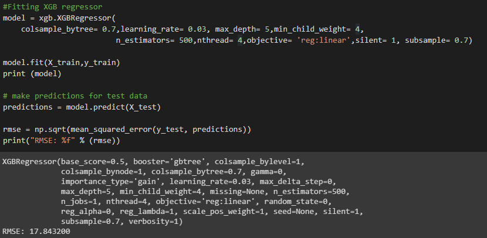Checking the predictions with the ground truth gives us a sense of how reliable the model at is predicting turn time. Taking a sample of 10 flights shown below, we see model’s predictions along with the actual turn time below each prediction. The predictions vary in accuracy, sometimes its very close to the actual turn time and sometimes its off by a lot. The first two flights vary about 5-6 minutes, while the third flight varies by more than 15 minutes. The closest prediction the model made was the sixth flight, which only varied by about 4 minutes.
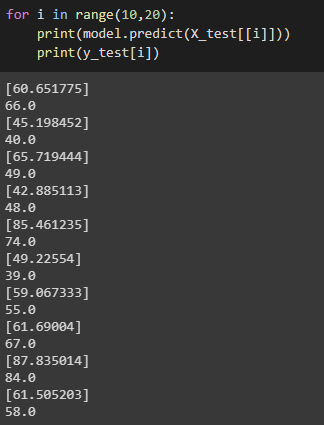Final Thoughts
The model is not as reliable as one would like it to be, turning an airplane involves random stochastic processes that are complex in nature. This makes it difficult to derive useful insights without using more sophisticated methods. With a RMSE of 17.84 the predictions can vary quite a lot. The accuracy can be improved by moving the time of the prediction closer to the end of the turn time, this will generate more data for the flight, but it would be less useful.